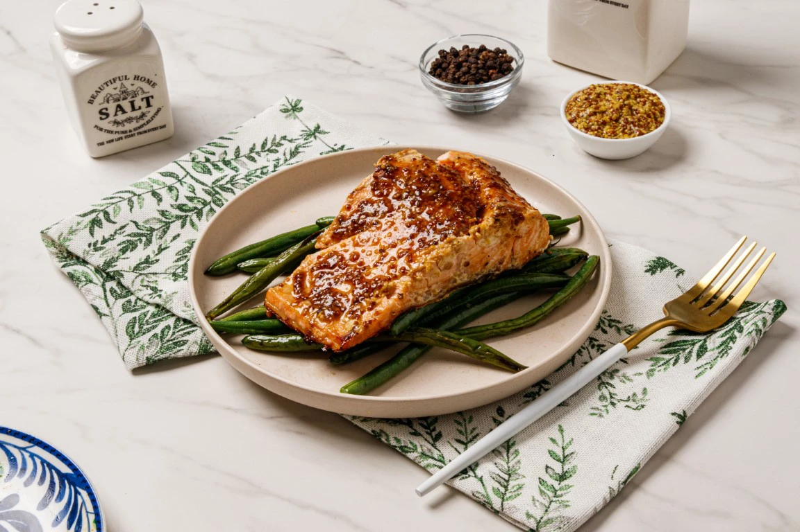

סלמון עם עור – קריספי מושלם במחבת
רוצים לצרוב סלמון עם העור בלי שהוא יידבק למחבת? זה המתכון המושלם בשבילכם, עם טיפ זהב לצריבה נכונה ופריכה במיוחד.

⏱ זמן הכנה: 10 דקות (כולל בישול: 20 דקות)
🔥 רמת קושי: בסיסי
🍽️ קלוריות: 418
✅ כשר
מצרכים (4 מנות)
- 4 יחידות פילה דג סלמון (200–220 גרם כל אחת)
- 6 כפות שמן זית
- ½ כפית פלפל שחור גרוס
- ½ כפית מלח גס
- נייר אפייה (עדיף טבעי)
- מגבת נייר רב פעמית או נייר סופג
אופן ההכנה
- גוזרים נייר אפייה למלבנים לפי גודל נתחי הסלמון.
- מייבשים היטב את הדגים עם מגבת נייר. מברישים את צד העור בשמן זית ומתבלים במלח ופלפל.
- מחממים 3–4 כפות שמן זית במחבת עד שרואים עשן קל.
- מניחים כל פילה עם העור כלפי מטה על נייר האפייה ומניחים במחבת.
- מטגנים על אש בינונית עד שהעור שחום וקריספי.
- הופכים בעדינות בעזרת מלקחיים, ומטגנים גם את שאר הצדדים לדרגת הבישול הרצויה.
- אפשר לתבל לפי כל אחד ממתכוני האתר – למשל מרינדת דבש ולימון.